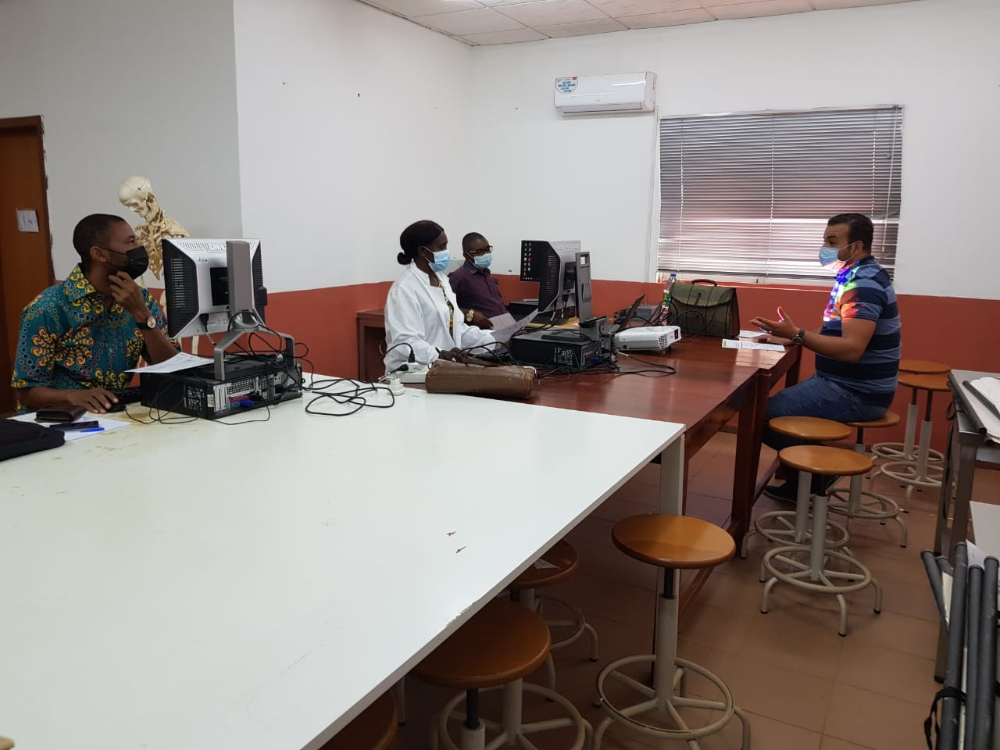

Contamos assim que cada aula tem uma duração temporal de 50 minutos e uma vez por semana,
os alunos estão convidados a fazer a campanha de limpeza das suas salas de aulas;
ainda podemos realçar o facto de que,
sem ser incorporado nos horários normais, mas no fim de cada dia letivo, os estudantes cumprem regularmente
com as tarefas de
limpezas e higiene das suas de aulas, e coordenadas pelos responsáveis de higienes das suas turmas.
Resultados do ano académico 2020 - 2021
99% dos alunos da 10ª Classe aprovaram e 1% não transitaram de classe;
95% dos alunos da 11ª classe aprovaram e 5% não transitaram de classe;
100% dos alunos da 12ª classe aprovaram com sucesso;
Resultados das Provas Comuns trimestrais(PCT) a nivel da Rede Eiffel 2020-2021
PCT1 : 2º na classificação da rede
PCT2 : 1º na classificação da rede
PCT3 : 1º na classificação da rede
Em função dos resultados 8 finalistas do liceu foram pre-selecionados para concorrerem nas
bolsas de estudo.
Resultados nos concuros Nacionais 2020 - 2021
Kandengue escritor:
1 aluno do liceu ocupou umas das 8 posições no concurso
realizado pela UNESCO
Melhores estudantes 2020 - 2021
Os alunos do Liceu Eiffel de Ndalatando ocupam actualmente o melhor lugar a nível da província do Cuanza Norte
A associação dos estudantes do Liceu de Ndalatando tem o objetivo de manter a união e a boa relação entre os estudantes do Liceu
em conformidades com o corpo diretivo do liceu.
Um outro foco da associação é defender os direitos dos alunos no liceu.
Atividades
A associação também tem por ora a realização de atividades no liceu tais como:
Concursos académicos;
Cinemas;
Tardes recreativas;
Organização de campeonatos escolares;
Organização:
Presidente;
Vice-Presidente
Secretária
Membros da área académica
Realizar reunião com os pais e encarregados de educação para os ajudar a motivar os seus educandos;
Tornar funcional o conselho de Pedagógico para continuar a melhora o rendimento escolar dos alunos;
Melhorar as aulas de Biologia, química, física e geologia usando e explorando imagens para permitir
que os estudantes consigam resolver as questões nas PCT que envolvam imagens
Trabalhar de modo diferencial com alunos que apresenta dificuldades em certas disciplinas;
Ajudar os estudantes a usarem as redes sociais para poderem ajudarem-se uns outros.
Excelentes resultados para as turmas 10ª Classes;
Utilização das Redes Sócias para o processo de educação e ensino;
Elaboração e implementação dos projectos pedagógico para cada disciplina de maneira a melhorar
os resultados dos alunos em função dos eixos traçados no PE do Liceu;
Melhoria dos resultados dos alunos processo avaliativo PCTs;
Maior empenho dos Professores que resultou na subida dos resultados comparado com o ano lectivo 2019:
Os Professores são periodicamente submetidos em formações programadas pela Coordenação da Rede do
Liceus Eiffel em Angola que têm sido muito benéficas
uma vez que tem se notado a melhoria das habilidades dos professores através dos resultados
apresentados pelos alunos
